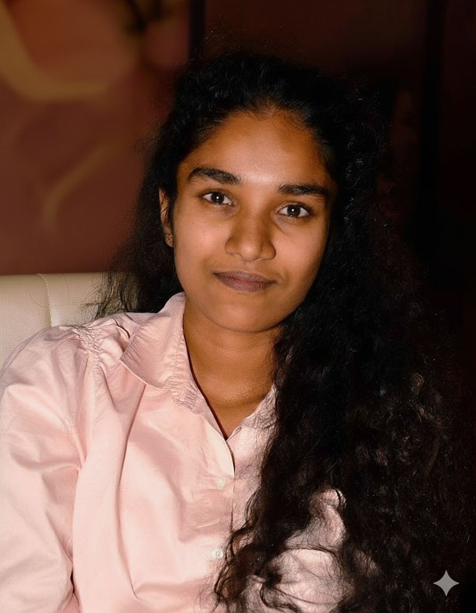
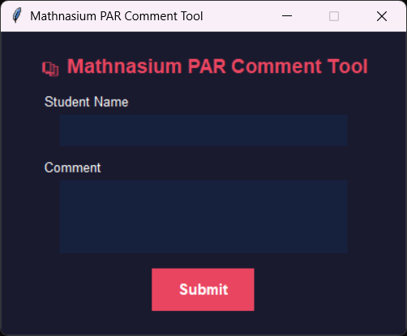

Microsoft Certified Fabric Analytics Engineer building end-to-end analytical pipelines. Specialist in Medallion Architecture, Direct Lake Power BI, and Star Schema modeling that drives real-time executive decisions.

I'm a Data Engineer and Analytics Engineer based in Buford, GA, with a Bachelor of Science in Computer Science (Data Science Minor) from Lindenwood University — graduating with a 3.91 GPA.
I specialize in building end-to-end analytical solutions on Microsoft Fabric, leveraging Direct Lake mode and Medallion Architecture to deliver high-performance, real-time insights that power executive decision-making.
I hold multiple Microsoft certifications and am passionate about bridging the gap between raw data and actionable business intelligence.
End-to-end Medallion Architecture pipeline on Microsoft Fabric using the Olist Marketplace public dataset, delivering sub-second Power BI reporting via Direct Lake mode.
End-to-end Medallion Architecture pipeline on Microsoft Fabric using the Olist Marketplace public dataset, delivering sub-second Power BI reporting via Direct Lake mode.

Automated ETL workflow reducing manual data entry by 80%, paired with Power BI dashboards surfacing student learning trends and operational KPIs for management.

PostgreSQL relational database for a broadcast management system, bridging operational data storage with real-time consumption for a team of 6.
Open to Data Engineering, Analytics Engineering, and Power BI roles.